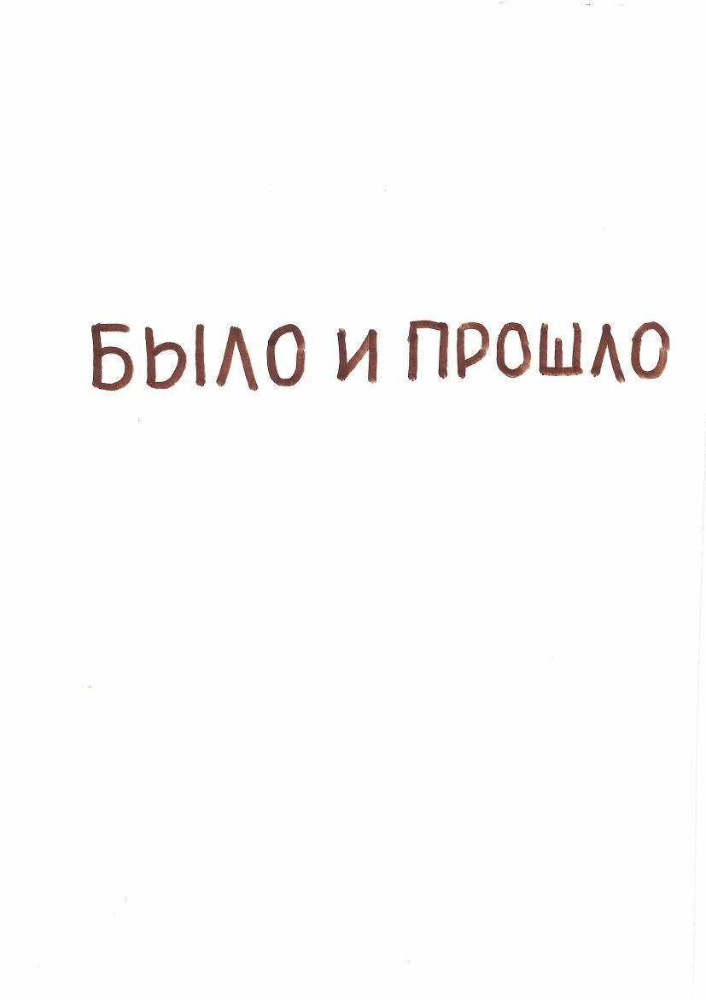

מטרת הסיפור שלי היא לתת לנכדתי היקרה אלינה, ולנכדיי דוד ועמית, מושג על השורשים שלנו, על התקופה שבה סבתא מריה ואני חיינו.
— מתוך ההקדמה

דף השער של כתב היד — «היה וחלף»
צילומי מסמכים, תעודות וכתבי יד המוזכרים בזיכרונות. לחצו להגדלה.
השושלת כפי שמתוארת בזיכרונות. לחצו על שם לפרטים. ניתן להוסיף ולתקן בקובץ data.js.
אירועי מפתח במשפחה, מסוף המאה ה-19 ועד העלייה לישראל.